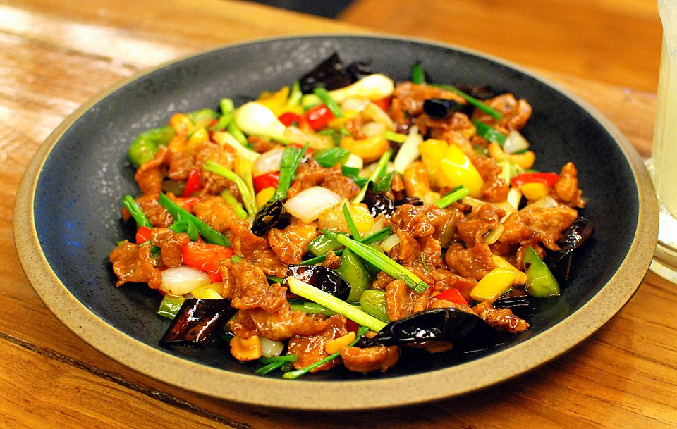

Chicken Cashew Nut
Home

Description
Chicken cashew nut, a popular dish in both Chinese-American and Thai cuisine,
typically features stir-fried chicken with cashews and vegetables in a savory
sauce. The dish can vary in spiciness, sweetness, and the specific vegetables used
depending on the region and restaurant. A common characteristic is the combination
of tender chicken, crunchy cashews, and a flavorful sauce that can include soy
sauce, oyster sauce, garlic, and other seasonings.
Ingredients
- 400 g boneless skinless chicken thighs, bite-sized pieces (see note 1)
- 2 teaspoons soy sauce
- 1 ½ tablespoon water
- 2 tablespoons neutral oil
- 7-10 dried chilies, small to medium size, (optional)
- 4 cloves garlic, chopped
- ½ onion, 1-inch diced
- ¾ cup green bell pepper, 1-inch diced
- 1 ¼ cups red, orange and/or yellow bell pepper, 1-inch diced
- ¾ cup unsalted roasted or raw cashews, plus extra for sprinkles (see note 2)
- 2 green onions, halved lengthwise and cut in 1.5-inch
Sauce:
- 1 tablespoon oyster sauce
- 1 tablespoon soy sauce
- 1 teaspoon Golden Mountain sauce, (see note 3)
- 1 teaspoon fish sauce
- 1 ½ teaspoon sugar
- 1 ½ Tablespoons Thai chili paste,
- 1 teaspoon toasted sesame oil
Directions
- For the cashews: Preheat the oven to 350°F (175°C) and roast the cashews (yes
even if you bought them roasted, roast them again) on a baking sheet for 8-10
minutes, and until they darken in color. If starting with raw cashews, roast
them for 10-12 minutes, stirring them half way through for more even roasting,
until they are slightly darker than golden.
- Combine the chicken thigh with soy sauce and mix well. If using chicken
breast, add 1 ½ tablespoon of water in addition to the soy sauce. In either
case let it sit for at least 15 minutes.
- Combine all sauce ingredients in a small bowl.
- If using dried chilies, add the oil to a wok and add the dried chilies; turn
the heat on to low. Keep stirring the chilies until they puff and darken into
a maroon colour, about 1 minute. Quickly remove them with a mesh skimmer,
leaving the oil behind, and place them onto a paper towel lined plate to
drain.
- In the same wok, turn the heat up to high. Once the oil is very hot, add the
chicken and spread the pieces out into one layer as much as you can.
- Allow the chicken to sear, undisturbed, for about 2 minutes or until the
underside is nicely browned. Once browned, toss the chicken, and keep cooking,
stirring frequently, until the chicken is completely cooked. Turn off the heat
and remove the chicken from the pan, leaving all the oil behind.
- With the heat still off, add the chopped garlic, then turn the heat on to
medium. Stir the garlic until the smallest pieces turn golden, then add the
onions and stir for about one minute.
- Turn the heat up to high then add the bell peppers, the chicken, and the
sauce mixture and toss until heated through and well mixed, about 1 minute.
- Turn off the heat, then add the green onions and cashews and toss just until
mixed. Plate and top with fried chilies, and serve immediately with jasmine
rice.